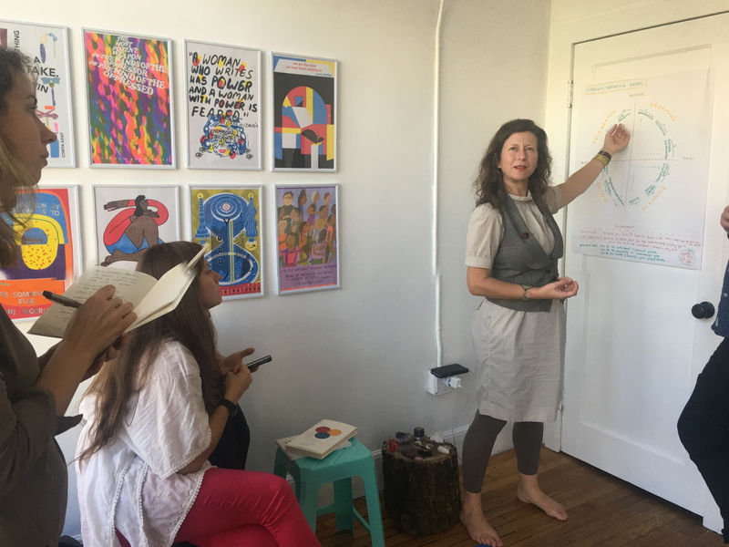

Innovator Incubator
Collaborator Workshop at Dream Farm Commons
October 26-28, 2018
The Collaboration Incubator is a participatory format, where you can learn about evolutionary leadership approaches and where you can experience Social Presencing Theater and Dragon Dreaming in action – both social technologies integrating activism and intuition.
The aim of the workshop is to figure out ways to support each other in what we are currently working – as part of a movement, an organization or individual. Related to that, we are also using the groups creativity and intelligence to look at a bigger shared question: "How to help building momentum for global grassroots democracy?"
With this idea in mind, we are inviting especially people who feel dedicated to progressive movements and or even just progressive ideas around changing things bottom up.
Each Incubator is connected to previous and following incubators in the Bay Area and Berlin and is embedded into the Open Value Network Vanilla Way and the Evolutionary Leaders Community.
www.collaborationincubator.net